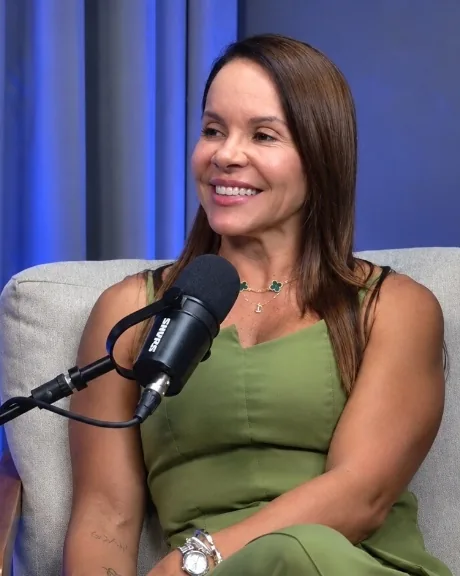

Saia do ciclo frustrante das dietas restritivas. Alcance o corpo desejado e recupere sua vitalidade com a metodologia autoral criada pela Dra. Joelma Marinho.
O problema nunca foi você ou sua falta de vontade. É que a maioria dos métodos tenta forçar uma rotina irreal e insustentável.
Você perde peso se privando de tudo, mas volta a engordar logo em seguida porque a dieta não encaixa na sua vida real.
Sentimento de medo e culpa toda vez que come algo fora do cardápio rígido, gerando ansiedade e compulsão.
Falta de energia para trabalhar ou treinar, inchaço abdominal frequente e sensação de corpo pesado.
Receber uma folha impressa na consulta e ficar sozinho, sem orientação quando surgem imprevistos na rotina.
"Criei o Programa Nutrir para te ajudar a conquistar o corpo que deseja, mesmo quando a sua rotina é tudo, menos rotina."
Comida real, com flexibilidade para a sua semana acontecer.
Estratégias para saciedade e metabolismo acelerado.
Resultados definitivos para manter sua autoestima elevada.

Graduada em Nutrição pela Universidade Federal de Alagoas (UFAL), especialista em Obesidade e Emagrecimento (UVA) e Controle de Qualidade (UFPB).
Com quase três décadas de atuação, a Dra. Joelma Marinho construiu uma carreira sólida na nutrição clínica e esportiva (tendo atuado inclusive na alimentação de atletas em grandes eventos como os JUBs). É autora do livro Descomplicando a Nutrição e desenvolveu o Programa Nutrir com o propósito de levar emagrecimento sem sofrimento para milhares de pessoas.
QUERO AGENDAR MINHA CONSULTAUm ecossistema completo desenhado para garantir seu sucesso do início ao fim.
Atendimento aprofundado e sem pressa (presencial em Maceió ou online via videochamada) focado nas suas metas.
Medição precisa de taxa metabólica, gordura corporal, massa magra e retenção hídrica para acompanhar sua evolução.
Avaliação criteriosa de exames laboratoriais para corrigir deficiências de vitaminas, hormônios e desaceleração metabólica.
Acesse seu cardápio personalizado, opções de substituição e horários direto no seu celular de forma prática.
E-books exclusivos com receitas deliciosas, rápidas e listas de compras inteligentes.
Acompanhamento próximo com a Dra. Joelma para tirar dúvidas diárias, adequar refeições em viagens e manter seu foco.
Respostas diretas sobre o funcionamento do acompanhamento.
Sim! O Programa Nutrir Online conta com a mesma entrega técnica rigorosa do presencial. As consultas acontecem por videochamada com material entregue no aplicativo e suporte contínuo no WhatsApp.
Não! A filosofia do Programa Nutrir é descomplicar. A Dra. Joelma ensina estratégias de combinação alimentar para que você continue apreciando os alimentos que gosta enquanto perde gordura de forma saudável.
Basta clicar no botão verde de agendamento nesta página. Nossa equipe entrará em contato pelo WhatsApp para encontrar o melhor horário (presencial ou online) para você.
Sim. Os atendimentos são particulares para garantir atenção exclusiva e estendida, porém emitimos nota fiscal/recibo completo para você solicitar o reembolso junto ao seu convênio médico.
Agende sua consulta e receba um acompanhamento respaldado por quase 30 anos de experiência clínica.
AGENDAR CONSULTA AGORA